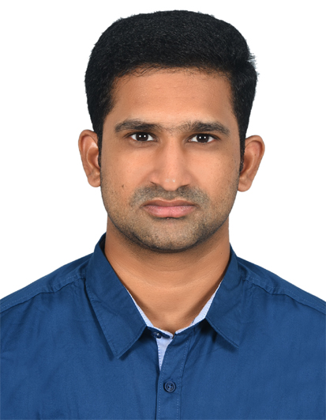

Janakiram Suragani
Platform/Linux Support Engineer
Platform/Linux Support Engineer with 12+ years of experience delivering secure, highly available, and scalable infrastructure solutions. Extensive expertise in multi-cloud environments (G42, Azure, OCI), datacenter operations, and containerized platforms. Strong background in automation, monitoring, and DevOps practices to streamline operations and improve system reliability. Proven leader in 24/7 production support, ITIL processes, SOP development, and team guidance, with a passion for driving operational excellence through Linux, Cloud, and DevOps technologies.
Professional Summary
Professional Summary
- Platform Support and Linux Engineer with 12+ years of experience managing Linux-based infrastructure across enterprise data centers, virtualization, and cloud environments.
- Expert in Linux administration (RHEL, Ubuntu, CentOS, EulerOS), cloud platforms, VMware, and 24/7 production support for mission-critical workloads.
- Hands-on experience in DevOps, automation, and configuration management using Ansible, AWX, Bash scripting, and CI/CD pipelines.
- Proficient in containerization and orchestration with Docker Swarm and Kubernetes, including deployment of stateful applications with persistent storage.
- Strong knowledge of ITIL and Agile (Scrum) methodologies; skilled in creating SOPs, operational processes, and leading teams to deliver projects successfully.
- Extensive expertise in monitoring, logging, and observability using Zabbix, Grafana, Cloud Scope, Cloud Eye, ELK Stack, and performance tuning tools.
- Experienced in cloud security, OS hardening, patch management, IAM, PKI, HSM administration, and vulnerability remediation.
- Proven ability to design, implement, and maintain high-availability platforms using load balancers, autoscaling, backup/recovery strategies, and HA infrastructure components.
- Skilled in troubleshooting server, network, and application issues, performing root cause analysis (RCA), and ensuring SLA compliance in 24/7 production environments.
- Strong documentation and knowledge-sharing skills; adept at preparing operational runbooks, implementation guides, and internal knowledge bases for cross-functional teams.
Technical Skills
Linux Server Administration
- RedHat
- CentOS
- Ubuntu
- SUSE
Cloud Operations
- G42 Cloud
- Microsoft Azure
- OCI
Automation
- Ansible
- AWX
- Bash Shell Scripting
Containerization
- Docker Containers
- Kubernetes
- Docker Swarm
Monitoring & Logging
- Zabbix
- ITRS OP5 Monitor
- Grafana & Prometheus
- Nagios
- Cloud Scope & Cloud Eye
Ticketing & Documentation
- Jira
- ServiceNow
- Kayako
- Confluence
Experience
Tesnus Technologies – Platform Support Engineer / Systems Administrator (April 2025 - Present) | Abu Dhabi, UAE
Key Responsibilities
- Provision, configure, and manage Linux servers (RHEL, Ubuntu, EulerOS, CentOS) across dedicated, virtual, and G42 Cloud environments.
- Implement OS hardening, baseline security configurations, and vulnerability remediation.
- Perform patching of virtual machines and Kubernetes nodes using Ansible automation.
- Monitor infrastructure availability and performance using Zabbix, Cloud Scope, Cloud Eye, and Grafana.
- Configure Cloud Scope alarms integrated with SNS for instance health and state notifications.
- Manage ECS resources including CPU, memory, disks, NICs, EIPs, and perform capacity scaling.
- Install and manage Docker Swarm clusters; deploy and operate containerized applications.
- Deploy persistent container storage using GlusterFS and integrate with Docker workloads.
- Maintain and support internal platform services such as Grafana, DNS, SMTP (OpenDKIM), LAMP stack, Bareos, Barman, PrivateBin, and FreeIPA IDM.
- Manage centralized logging pipelines using Filebeat, Logstash, and Elasticsearch (ELK Stack).
- Administer HSM (Utimaco) devices and PKI infrastructure including TLS certificates and local Certificate Authority.
- Manage VPN gateways, authentication mechanisms, and role-based access control (RBAC).
- Handle hardware fault management including disk, RAM, CPU replacements and coordination with vendors.
- Prepare and maintain technical documentation, implementation guides, and operational runbooks.
- Resolve platform-level incidents using Jira while meeting SLA and uptime requirements.
Core42 (G42 Cloud) – System Administrator (June 2022 - March 2025) | Abu Dhabi, UAE
Key Responsibilities
- Provisioned and administered Linux-based cloud infrastructure across G42 Cloud platforms.
- Created and managed compute, networking, storage, autoscaling, and load balancer services.
- Configured Elastic Load Balancers and Auto Scaling for high availability and resilience.
- Performed quarterly patching, OS hardening, and vulnerability remediation on VMs and Kubernetes CDK clusters.
- Monitored infrastructure health and availability using Zabbix, Cloud Scope, Cloud Eye, and Grafana.
- Configured IAM users, groups, and roles for secure access management within infrastructure tenants.
- Managed ECS resources including disk expansion, CPU/memory scaling, and network interfaces.
- Configured centralized package repositories using Nexus and performed basic database administration (MySQL, PostgreSQL).
- Automated configuration management using Ansible and AWX, including HAProxy application deployments.
- Integrated Ansible playbooks with GitLab CI/CD pipelines for infrastructure automation.
- Maintained high availability for critical internal services such as Zabbix, FreeIPA, GitLab, Vault, AWX, NetBox, Jira Service Desk, and Confluence using HAProxy.
- Managed Docker Swarm clusters hosting applications like Jira, Confluence, Grafana, PrivateBin, MySQL, and Team Password Manager with GlusterFS storage.
- Enabled backup and recovery using server-level and disk-level backup vaults.
- Handled Level 2 cloud service incidents and performed root cause analysis (RCA) as per SLA.
- Authored technical documentation in Confluence and tracked issues, bugs, and changes using Jira.
Rackspace Technology – Linux Support Engineer II (Feb 2021 - May 2022) | Bangalore, India
Key Responsibilities
- Provisioned, configured, and administered Linux servers (RHEL, Ubuntu, CentOS) across Dedicated, Virtual, and Rackspace Cloud environments.
- Provided 24/7 production support for large-scale cloud infrastructure supporting 10,000+ customers.
- Automated routine administrative tasks using Bash shell scripting to improve operational efficiency.
- Installed, configured, and maintained core services including Apache, MySQL, PHP, PHP-FPM, FTP, NFS, NTP, and Docker containers.
- Monitored system health, availability, and performance using sar, iostat, vmstat, uptime, and system logs.
- Troubleshot CPU, memory, disk, and network performance issues; performed capacity planning and tuning.
- Managed incidents, changes, and service requests using ServiceNow in alignment with ITIL best practices.
- Collaborated with cross-functional teams and vendors to resolve critical incidents and implement permanent fixes.
- Supported high-availability production workloads, ensuring SLA compliance and minimal downtime.
- Installed and managed caching and messaging services such as Redis and Memcached for performance optimization.
GLOBALFOUNDRIES – Sr Eng IT Engn (Apr 2019 - Feb 2021) | Bangalore, India
Key Responsibilities
- Installed and administered Red Hat Enterprise Linux and CentOS on physical and virtual servers in a semiconductor manufacturing environment.
- Configured server hardware components including iLO, RAID controllers, and BIOS to meet enterprise build standards.
- Provisioned and supported virtual machines using templates in RHEV environments.
- Implemented monitoring solutions using Grafana, InfluxDB, and Telegraf for real-time performance visualization.
- Built custom Grafana dashboards and integrated servers for infrastructure monitoring.
- Installed and tested ELK stack for centralized logging and observability.
- Automated Telegraf agent deployment using Ansible roles.
- Installed, configured, and managed Ansible Tower for centralized automation.
- Maintained 99% uptime for mission-critical semiconductor fabrication servers.
- Administered and supported SFTP servers, ensuring availability and secure data transfer.
Optum (UnitedHealth Group) – Sr Systems Mgmt Analyst (Oct 2016 - Apr 2019) | Hyderabad, India
Key Responsibilities
- Promoted from Systems Management Analyst to Senior Systems Management Analyst based on performance.
- Led and managed a team of 10 engineers supporting enterprise Linux infrastructure.
- Provisioned physical servers using Foreman for automated OS deployment.
- Configured iLO, RAID controllers, and hardware standards during server build lifecycle.
- Provisioned and supported Linux virtual machines and performed VMware administration tasks.
- Automated infrastructure tasks using Ansible playbooks and CI pipelines in Jenkins.
- Maintained automation code and scripts using Git and internal GitHub repositories.
- Managed build and release operations using HPSA and monitored systems via HPOV.
- Performed LVM management, disk expansion, package management, and OS troubleshooting.
- Monitored system performance using top, iftop, netstat, sar, and related tools.
- Worked in Agile Scrum methodology and supported US clients during night shifts.
- Handled incidents and service requests using ServiceNow and coordinated with vendors and OEMs.
CTRLS Data Centers – Linux Engineer (Nov 2015 - Oct 2016) | Hyderabad, India
Key Responsibilities
- Installed, configured, and managed Linux servers (RHEL, CentOS, Ubuntu) in a data center environment.
- Provided 24/7 production support for banking and financial clients.
- Delivered services following ITIL processes and SLA commitments.
- Troubleshot incidents via Kayako ticketing system supporting 3000+ customers.
- Installed and administered services including Apache, Tomcat, MySQL, FTP, NFS, NTP, and mail servers.
- Configured monitoring tools such as Nagios, MRTG, and Syslog for infrastructure visibility.
- Performed RAID, LVM, disk management, backups, and package management.
- Maintained DNS services and resolved application-level issues through log analysis.
- Performed hardware troubleshooting using KVM switches and on-site data center access.
- Developed shell scripts to automate monitoring and operational tasks.
Voxvalley Technologies – Trainee Network Engineer (Mar 2014 - Nov 2015) | Hyderabad, India
Key Responsibilities
- Installed and administered Linux servers (CentOS, Ubuntu) and Windows systems.
- Performed system administration tasks including user management, disk partitioning, and backups.
- Configured and troubleshot FTP, Apache, MySQL, VNC, and VOIP servers.
- Handled basic networking tasks including cable crimping and network setup.
- Managed storage using LVM and RAID configurations.
- Installed and configured Nagios for monitoring and email alerting.
- Performed MySQL backup and restore operations.
- Wrote shell scripts to support automation and monitoring tasks.
Education
Bachelor of Technology (CSE) JNTU University KAKINADA (2010-2013)
Board of Intermediate Education, A.P. (MPC) (2008-2009)
Board of secondary Education, A.P. (2007)


Contact Me
Interested in hiring me? Let's discuss. Send me a message and I'll respond as soon as possible.
Or contact me directly: